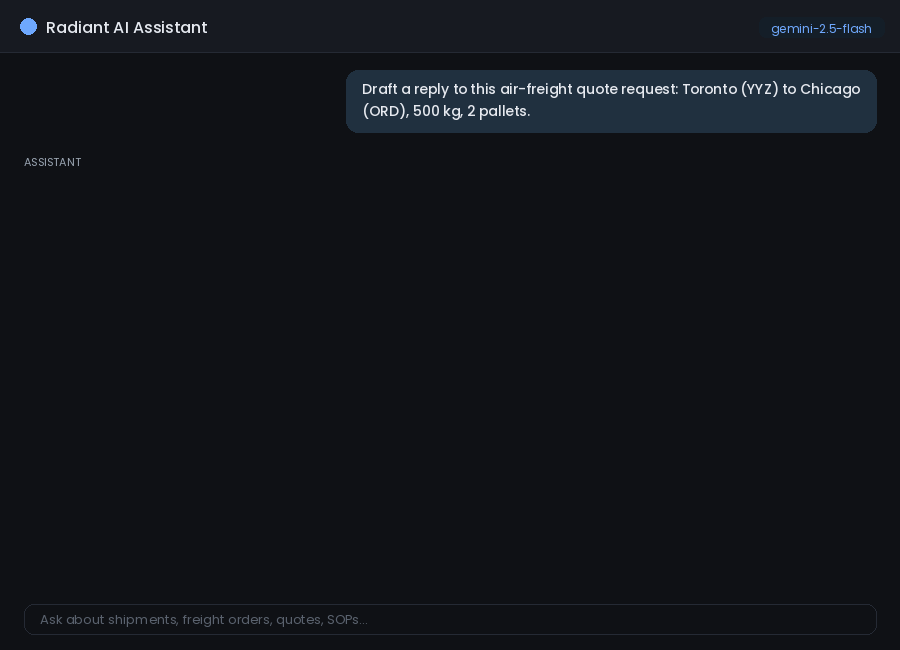

Radiant Global Logistics · AI Product (Intern), 2026
A multi-LLM assistant, and the analytics & evaluation platform behind it
Ops, sales, and finance teams had to navigate SAP transaction codes and buried SOPs to answer routine questions. I built a natural-language assistant over SAP TM, a ClickHouse warehouse, and a RAG knowledge base, plus a self-generating, multi-tab analytics dashboard (a business-leadership view and a full engineering view) and an automated evaluation system that scores every answer. Explore the dashboard tabs below.
See it in action

Illustrative recreation of the OpenWebUI assistant (mock data): an air-freight quote request is routed to the Google ADK agent pipeline, a reply email is drafted, the full tool-call trace is expandable for transparency, and the built-in 0-to-10 feedback capture prompts for reasons on low scores.
Adoption & ROI
The leadership view: plain-language usage, ROI, and what people ask.
Intent mix and where each answer's data came from.
Intent breakdown
Response source
Tool call vs. knowledge base vs. ungrounded (model only).
Tool calls 352 (55%)
Ungrounded (LLM only) 239 (37%)
Knowledge base (RAG) 43 (6%)
Reliability & models
The engineering view: system health and model routing.
Error rate
0%
Tool reliability
100%
.62/62
Models routed
7
Avg response
33.4s
Responses by model (7 routed by task type)
Automated evaluation
Every grounded response is scored by an LLM-as-judge across 7 quality dimensions (subjective); every tool call is checked by deterministic runtime assertions (objective, binary pass/fail the model cannot talk past).
Overall
0.92
.7-dim judge
Faithfulness
0.96
Relevance
0.96
Completeness
0.91
Groundedness
0.94
Tool routing
0.96
Query correctness
0.95
Error handling
0.98
Runtime assertions
Assertions run
168
Pass rate
94%
Passed
157
Failed
11
Multi-agent trace evaluation
The upgrade I am proudest of: I moved evaluation from single-call scoring to full multi-agent trace analysis. Instead of grading only the final answer, the system scores every step in a turn, the routing decision, each tool call, and the hand-offs between agents, so it catches sequencing and hand-off failures that are invisible when you look at the output alone.
One turn, scored step by step
1 ✓ Routeintent to Agent Framework
→
2 ✓ Agent pipelineGoogle ADK · /process/stream
→
3 ✓ Rate lookupClickHouse run_query
→
4 ✓ Compose draftfaithful to fetched data
A single-call evaluator would have scored step 4's answer as correct and missed that step 2 called the wrong pipeline. Trace-level scoring flags the exact step that broke.
How it is built
Hub-and-spoke over the Model Context Protocol (MCP), on Google Cloud Run. Independent, swappable spokes; one failing backend never takes down the rest.
OpenWebUI hubchat interface + LLM router · Cloud Run
— MCP PROTOCOL —
ClickHouse MCPanalytics warehouse
SAP TM MCPtransport mgmt APIs
Agent Framework MCPmulti-agent pipelines
DEPLOY:
GitHub
→
Cloud Build
→
Artifact Registry
→
Cloud Run
The payoff for operations
BEFORE
5-minute SAP lookup per order
Requires SAP training and transaction codes
SOPs buried in shared drives
Audit trails require change-log navigation
AFTER
10-second natural-language query
No SAP expertise needed, plain English
SOPs searchable by question
Change history in one question
4+ hours saved daily for a team running 50 order lookups
Product decisions that made it trustworthy
Self-generating dashboard, two audiences. Typing "generate a dashboard" produces a business view (plain language, ROI) or a full engineering view (all tabs, technical metrics), so leadership and the tech team each see what they need.
Two-layer evaluation. LLM-as-judge for subjective quality, deterministic assertions for objective tool-call correctness the judge could be fooled on. Neither alone is enough.
Grounding over generation. Answers trace to SAP, the warehouse, or the KB; a "To Be Reviewed" staging tab holds metrics and flagged responses for human validation before they are trusted.
Routing across 7 models by task type, balancing cost, latency, and quality, on an MCP contract that keeps every backend swappable.
Built by Malvika Sanghvi at Radiant Global Logistics (AI Product intern, 2026). Metrics reproduced from the live multi-tab dashboard I built (May–Jun 2026); internal identifiers, table names, and customer data omitted. Recreated for portfolio use.